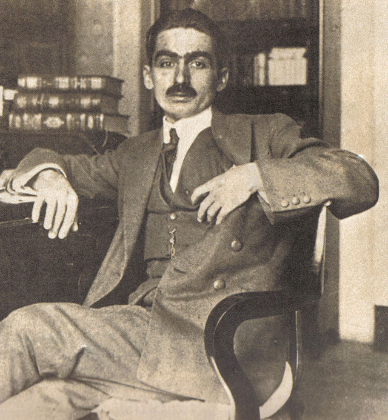

Autores Famosos de Desenhos Animados
Monteiro Lobato
Monteiro Lobato, um dos maiores escritores brasileiros.é especialmente conhecido por suas obras infantis, que conquistaram gerações, como o Sitio do Sítio do Picapau Amarelo.
Walt Disney

Walt Disney é um dos nomes mais reconhecidos na história da animação. Criou o Mickey Mouse e fundou a Disney, criando um império de animações que continuam encantando gerações até hoje.
Matt Groening

Matt Groening é o criador da famosa série de animação "Os Simpsons", uma das séries de maior sucesso e mais duradouras da televisão, que mudou a forma como desenhos animados eram feitos para adultos.